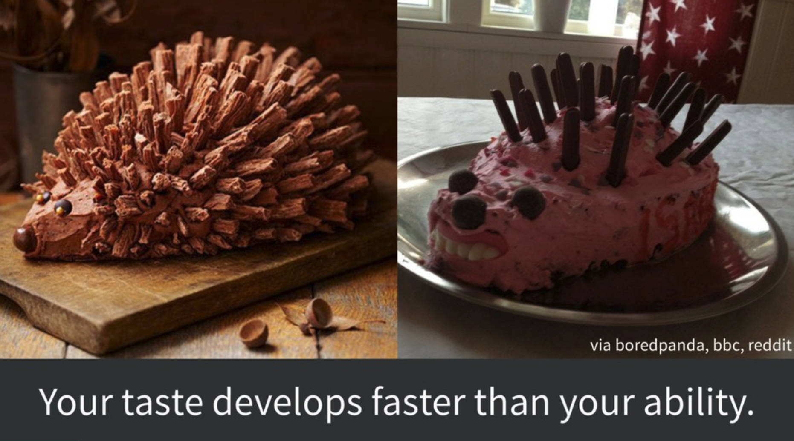

GitHub strategies
What is GitHub1, and what are GitHub strategies for Future Us?
GitHub is a powerful tool for collaborative coding with version control, but here and in our GitHub Clinic we are going to focus on some of its lesser-celebrated awesomeness. We’ll talk about GitHub for supporting, reusing, contributing, and failing safely, as well as GitHub for publication and project management. We will focus on how to use GitHub for collaboration and communication for science, and spend time with hands-on practice.
GitHub Clinic
Openscapes GitHub Clinic introduces GitHub with the motivation of collaboration and open science. It is designed for both new and seasoned learners, focused on how develop workflows with diverse teams.
GitHub for supporting, reusing, contributing, and failing safely
This introduction was developed with Allison Horst in the GitHub Illustrated Series (Horst & Lowndes 2022):
When we talk about managing projects to help us contribute, reuse, collaborate, and fail safely, we are talking about GitHub. We mean using modern collaborative software designed to organize otherwise unwieldy interrelated files and to track changes by potentially different people through time – something that is for everyone, whether or not we identify as “coders”. People do use GitHub for code- and data-intensive projects, but we are not limited to that use. GitHub is a powerful approach for any project that we want to organize and communicate about; it’s a way we can be open with ourselves and our teams, and also work more publicly as we feel comfortable.
So let’s talk about why GitHub is so empowering for our project-oriented and collaborative lives.
![A row of 6 cute smiling monsters celebrating using GitHub. The first, wearing a climbing harness labeled "Me" is high-fiving another whose harness says "Future Me". Others hold a box of snacks (tacos!), a map, a rope. Text above the monsters quotes Jenny Bryan: \"Collaboration is the most compelling reason to manage a project with Git and GitHub. My definition of collaboration includes hands-on participation by multiple people, including your past and future self, as well as an asymmetric model, in which some people are active makers and others only read or review](images/github_friends.png)
See the GitHub Illustrated Series (Horst & Lowndes 2022) for the full series!
Growth Mindset
When we teach GitHub, we find it’s useful to say explicitly that we should go in with a Growth Mindset - the idea that we don’t know something yet but we are able to learn. Growth Mindset is work by Dr. Carol Dweck - see her book, TED Talk (10 min); illustrated video (2 min).
As part of this, we like how Jenny Bryan (Code Smells and Feels) thinks about this - that your tastes develops faster than your abilities.

GitHub for research groups
As you get a better hands-on sense of GitHub’s capabilities, you’ll be thinking about how to get organized and use this for your own research group.
Organizations
Here are two examples of GitHub Organizations created as part of Openscapes Champions Cohorts where the content is now developed and maintained to support a broader range of researchers.
- NASA Openscapes https://github.com/NASA-Openscapes
- NMFS Openscapes for NOAA Fisheries https://github.com/nmfs-openscapes
Many Champions teams create GitHub Organizations for their research group. This is a way for all the work that happens in the research group to be organized in one place, but also clearly attributed and credited by each user who contributes.
You can explore other Champions teams’ GitHub organizations they’ve created. They’re listed under the Cohorts in which they participated:
- Gavin Fay Lab https://github.com/thefaylab
- NWFSC Fisheries Engineering and Acoustic Technologies (FEAT) team https://github.com/NOAA-FEAT
- NWFSC Protected Salmonids Team https://github.com/nwfsc-math-bio
- AFSC GAP Survey Data Products https://github.com/afsc-gap-products
CS&S Cohort blog post; Cohort repo
- Kenai Watershed Forum https://github.com/Kenai-Watershed-Forum
- WildCo Lab https://github.com/WildCoLab
CSU-COAST Cohort blog post; Cohort repo
- Logan Lab https://github.com/loganlabcsumb
- Ecological Oceanography Lab at CSUN https://github.com/ecoocelab-csun
- Claisse Lab @ Cal Poly Pomona https://github.com/ClaisseLab
- Coastal Ecosystems Lab https://github.com/coastal-ecosystems-lab
Should my students create repos in our lab organization?
While there are many different approaches that could make sense for your group, our starting recommendation would be that any project happening in the research group gets its own repository, and that repository is in the research group’s Organization. This is then clearly part of the research group’s work and more findable by past/current/future members. And it can be forked to other accounts at any time.
Issues
Issues and Projects are a great way to keep organized. See a few examples in the NOAA Fisheries wiki and Openscapes How We Work issues and Planning project.
How much should I write in a single Issue?
The “size” of each Issue is something you’ll get a feel for as you use them more, so don’t worry too much about it as you get started. The most common “size” of Issue is something you can complete, and close. This might include smaller checklists and conversations, but it is more along the lines of “change axes labels in my plot” rather than “write thesis chapter”.
Some Issues are also used more as reference and shared resources, and might not be closed so they’re easier to discover. Depending on your workflow and norms you establish with your group, it might be best to keep those reference issues in a different repository so you don’t have lingering open issues in a repo that you like to close issues and move on.
When you’re logged into GitHub, go to https://github.com/issues to see all of the Issues assigned/created/etc for your account!
Branches
Branches are a really powerful feature for software development, but aren’t necessarily the right place for new GitHub users to get started. If there are a small number of people in a single repository and you’re all first learning, we’d suggest that you start using GitHub without branches, and focus on checking in with each other as you contribute (see R for Excel Users example collaborating with GitHub from RStudio).
Aside: Julie Lowndes only worked in the main branch with her small group of Ocean Health Index colleagues for the first 8 years as a GitHub user; it was only when working with the NASA Openscapes Mentors community that she learned how to use branches as software developers do.
Branches are powerful as your teams grow and/or as you become savvier with GitHub and code, so it is good to discuss strategies with them.
Should we do everything in a dev branch?
Full question: “Right now any collaborative code in my group has a main branch and a dev branch. All collaborators clone the dev branch and push back to the dev branch on GitHub before anything ever goes to main. Is this best practice?”
Advice: This system with the dev branch works so long as the dev doesn’t diverge too far from the main branch - the Ocean Health Index project (my old research team) does it that way but it’s someone’s job for a few weeks at the end of each year making sure the dev branch can merge into main.
Another approach is to treat each branch as very temporary: you make a branch from main, add your contribution, make a pull request, merge and delete the branch. This is what we’ve been doing with the NASA Mentors and it’s more continuous little updates rather than larger big updates, and I think it works better when working with Jupyter Notebooks, which can cause a lot of merge conflicts.
Footnotes
From Bryan 2017: “we’re targeting GitHub - not Bitbucket or GitLab - for the sake of specificity. However, all the big-picture principles and even some mechanics will carry over to these alternative hosting platforms. We are advocating for the use of hosted version control as a general concept, with GitHub being the best and most common provider today.”↩︎